Vout/Vbias/Iref: srednia wazona czasem w oknie 90-100us (stan ustalony). Iup: srednia wazona czasem TYLKO gdy zrodlo Vup2 = 1 (v(up) > 0.5V). Idn: srednia wazona czasem TYLKO gdy zrodlo Vdn2 = 1 (v(dn) > 0.5V). Na wykresach (panel 4) zacieniowanie pokazuje dokladnie te przedzialy.
| Corner | T [C] | Vp [V] | Vout [V] | Vbias [V] | Iref [uA] | Iup [uA] | Idn [uA] | Rozbieżność [%] | |
|---|---|---|---|---|---|---|---|---|---|
| mos_tt | -40 | 1.08 | 0.4458 | 0.6362 | 0.556 | 0.118 | 0.118 | 0.57 | wykres |
| mos_tt | -40 | 1.2 | 0.4929 | 0.6807 | 1.066 | 0.235 | 0.232 | 0.92 | wykres |
| mos_tt | -40 | 1.32 | 0.5535 | 0.7164 | 1.688 | 0.384 | 0.380 | 1.04 | wykres |
| mos_tt | 27 | 1.08 | 0.4788 | 0.5698 | 0.845 | 0.209 | 0.208 | 0.30 | wykres |
| mos_tt | 27 | 1.2 | 0.5318 | 0.6124 | 1.359 | 0.343 | 0.342 | 0.48 | wykres |
| mos_tt | 27 | 1.32 | 0.5954 | 0.6485 | 1.954 | 0.504 | 0.502 | 0.58 | wykres |
| mos_tt | 125 | 1.08 | 0.4895 | 0.4662 | 1.317 | 0.380 | 0.378 | 0.61 | wykres |
| mos_tt | 125 | 1.2 | 0.5487 | 0.5072 | 1.817 | 0.532 | 0.527 | 0.94 | wykres |
| mos_tt | 125 | 1.32 | 0.6190 | 0.5435 | 2.366 | 0.704 | 0.695 | 1.28 | wykres |
| mos_ss | -40 | 1.08 | 0.4084 | 0.6591 | 0.136 | 0.024 | 0.025 | -1.16 | wykres |
| mos_ss | -40 | 1.2 | 0.4327 | 0.7260 | 0.447 | 0.083 | 0.082 | 0.91 | wykres |
| mos_ss | -40 | 1.32 | 0.4718 | 0.7722 | 0.908 | 0.175 | 0.172 | 1.49 | wykres |
| mos_ss | 27 | 1.08 | 0.4310 | 0.6094 | 0.374 | 0.081 | 0.081 | 0.31 | wykres |
| mos_ss | 27 | 1.2 | 0.4654 | 0.6630 | 0.745 | 0.166 | 0.165 | 0.80 | wykres |
| mos_ss | 27 | 1.32 | 0.5113 | 0.7056 | 1.214 | 0.278 | 0.275 | 1.03 | wykres |
| mos_ss | 125 | 1.08 | 0.4669 | 0.5143 | 0.806 | 0.212 | 0.212 | 0.11 | wykres |
| mos_ss | 125 | 1.2 | 0.5102 | 0.5606 | 1.208 | 0.323 | 0.321 | 0.38 | wykres |
| mos_ss | 125 | 1.32 | 0.5623 | 0.6007 | 1.666 | 0.453 | 0.450 | 0.61 | wykres |
| mos_ff | -40 | 1.08 | 0.5184 | 0.5934 | 1.245 | 0.308 | 0.307 | 0.40 | wykres |
| mos_ff | -40 | 1.2 | 0.5904 | 0.6288 | 1.936 | 0.493 | 0.490 | 0.49 | wykres |
| mos_ff | -40 | 1.32 | 0.6747 | 0.6591 | 2.717 | 0.708 | 0.705 | 0.53 | wykres |
| mos_ff | 27 | 1.08 | 0.5522 | 0.5245 | 1.524 | 0.420 | 0.420 | 0.01 | wykres |
| mos_ff | 27 | 1.2 | 0.6258 | 0.5609 | 2.180 | 0.612 | 0.612 | 0.13 | wykres |
| mos_ff | 27 | 1.32 | 0.7115 | 0.5928 | 2.905 | 0.830 | 0.828 | 0.31 | wykres |
| mos_ff | 125 | 1.08 | 0.4731 | 0.4205 | 1.997 | 0.636 | 0.614 | 3.47 | wykres |
| mos_ff | 125 | 1.2 | 0.5504 | 0.4575 | 2.601 | 0.835 | 0.805 | 3.56 | wykres |
| mos_ff | 125 | 1.32 | 0.6388 | 0.4907 | 3.247 | 1.054 | 1.015 | 3.62 | wykres |
| mos_sf | -40 | 1.08 | 0.4395 | 0.6820 | 0.515 | 0.102 | 0.102 | 0.61 | wykres |
| mos_sf | -40 | 1.2 | 0.4828 | 0.7272 | 1.009 | 0.208 | 0.206 | 1.03 | wykres |
| mos_sf | -40 | 1.32 | 0.5391 | 0.7633 | 1.614 | 0.345 | 0.341 | 1.18 | wykres |
| mos_sf | 27 | 1.08 | 0.4727 | 0.6172 | 0.812 | 0.190 | 0.189 | 0.39 | wykres |
| mos_sf | 27 | 1.2 | 0.5227 | 0.6601 | 1.313 | 0.316 | 0.314 | 0.61 | wykres |
| mos_sf | 27 | 1.32 | 0.5832 | 0.6964 | 1.895 | 0.467 | 0.464 | 0.72 | wykres |
| mos_sf | 125 | 1.08 | 0.5118 | 0.5152 | 1.291 | 0.359 | 0.357 | 0.40 | wykres |
| mos_sf | 125 | 1.2 | 0.5706 | 0.5561 | 1.782 | 0.504 | 0.500 | 0.78 | wykres |
| mos_sf | 125 | 1.32 | 0.6404 | 0.5924 | 2.321 | 0.668 | 0.660 | 1.18 | wykres |
| mos_fs | -40 | 1.08 | 0.4533 | 0.5934 | 0.606 | 0.138 | 0.137 | 0.54 | wykres |
| mos_fs | -40 | 1.2 | 0.5048 | 0.6369 | 1.136 | 0.266 | 0.264 | 0.81 | wykres |
| mos_fs | -40 | 1.32 | 0.5701 | 0.6721 | 1.780 | 0.429 | 0.425 | 0.90 | wykres |
| mos_fs | 27 | 1.08 | 0.4851 | 0.5255 | 0.886 | 0.230 | 0.229 | 0.21 | wykres |
| mos_fs | 27 | 1.2 | 0.5413 | 0.5677 | 1.414 | 0.374 | 0.373 | 0.36 | wykres |
| mos_fs | 27 | 1.32 | 0.6085 | 0.6036 | 2.025 | 0.546 | 0.544 | 0.44 | wykres |
| mos_fs | 125 | 1.08 | 0.4536 | 0.4208 | 1.351 | 0.407 | 0.401 | 1.51 | wykres |
| mos_fs | 125 | 1.2 | 0.5126 | 0.4616 | 1.861 | 0.565 | 0.556 | 1.73 | wykres |
| mos_fs | 125 | 1.32 | 0.5829 | 0.4979 | 2.421 | 0.744 | 0.730 | 1.92 | wykres |
mos_tt | T=-40C | Vp=1.08V | V(out)=0.4458V, V(vbias)=0.6362V (okno 90-100us), Iref=0.556uA (okno 90-100us), Iup=0.118uA (tylko gdy Vup2=1), Idn=0.118uA (tylko gdy Vdn2=1)
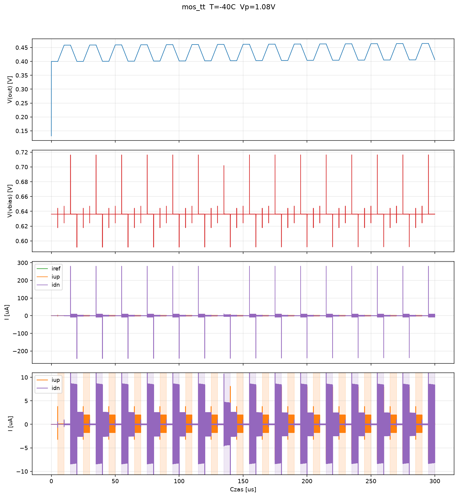
mos_tt | T=-40C | Vp=1.2V | V(out)=0.4929V, V(vbias)=0.6807V (okno 90-100us), Iref=1.066uA (okno 90-100us), Iup=0.235uA (tylko gdy Vup2=1), Idn=0.232uA (tylko gdy Vdn2=1)
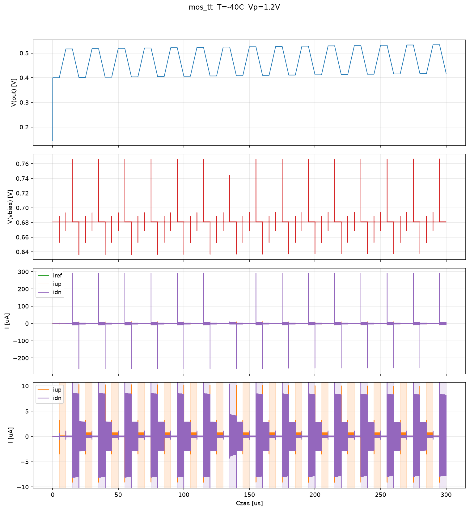
mos_tt | T=-40C | Vp=1.32V | V(out)=0.5535V, V(vbias)=0.7164V (okno 90-100us), Iref=1.688uA (okno 90-100us), Iup=0.384uA (tylko gdy Vup2=1), Idn=0.380uA (tylko gdy Vdn2=1)
mos_tt | T=27C | Vp=1.08V | V(out)=0.4788V, V(vbias)=0.5698V (okno 90-100us), Iref=0.845uA (okno 90-100us), Iup=0.209uA (tylko gdy Vup2=1), Idn=0.208uA (tylko gdy Vdn2=1)
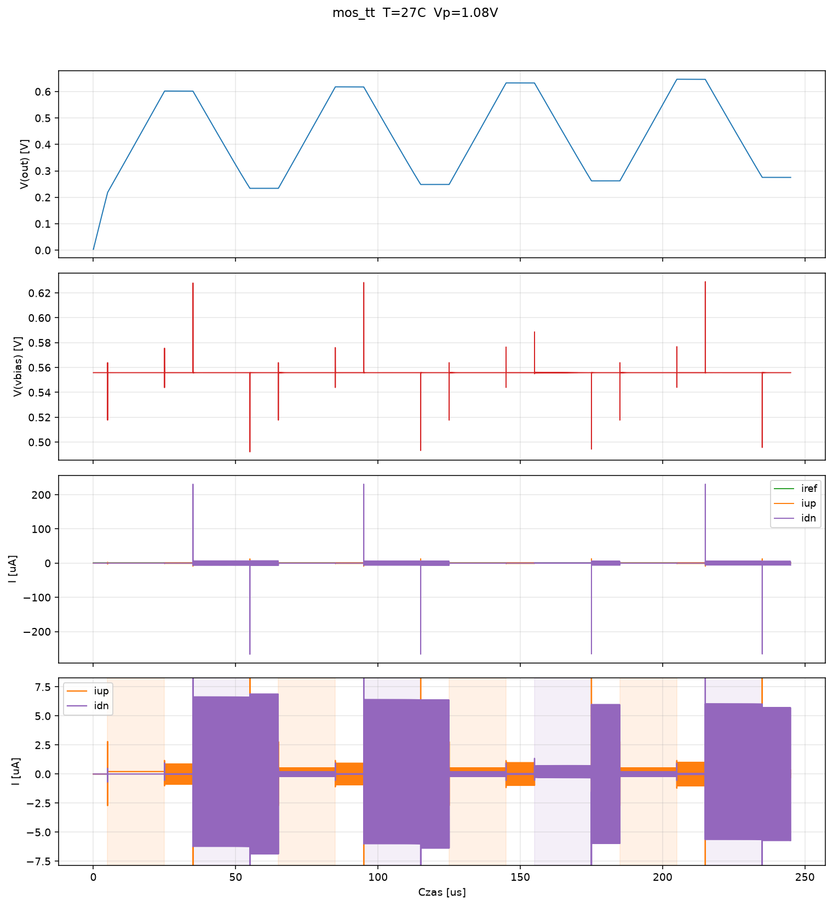
mos_tt | T=27C | Vp=1.2V | V(out)=0.5318V, V(vbias)=0.6124V (okno 90-100us), Iref=1.359uA (okno 90-100us), Iup=0.343uA (tylko gdy Vup2=1), Idn=0.342uA (tylko gdy Vdn2=1)
mos_tt | T=27C | Vp=1.32V | V(out)=0.5954V, V(vbias)=0.6485V (okno 90-100us), Iref=1.954uA (okno 90-100us), Iup=0.504uA (tylko gdy Vup2=1), Idn=0.502uA (tylko gdy Vdn2=1)
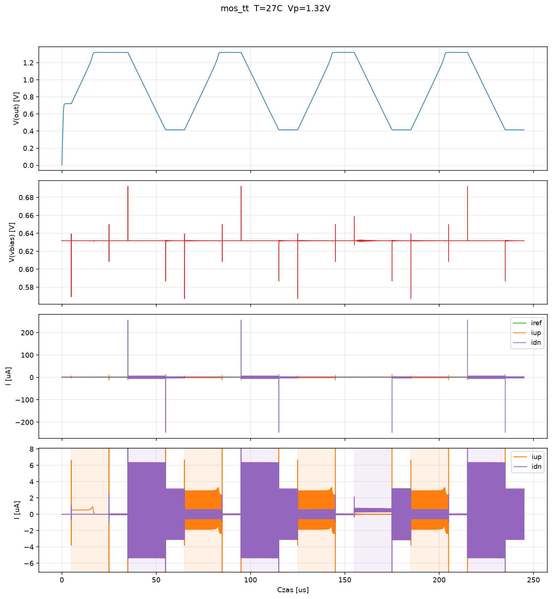
mos_tt | T=125C | Vp=1.08V | V(out)=0.4895V, V(vbias)=0.4662V (okno 90-100us), Iref=1.317uA (okno 90-100us), Iup=0.380uA (tylko gdy Vup2=1), Idn=0.378uA (tylko gdy Vdn2=1)
mos_tt | T=125C | Vp=1.2V | V(out)=0.5487V, V(vbias)=0.5072V (okno 90-100us), Iref=1.817uA (okno 90-100us), Iup=0.532uA (tylko gdy Vup2=1), Idn=0.527uA (tylko gdy Vdn2=1)
mos_tt | T=125C | Vp=1.32V | V(out)=0.6190V, V(vbias)=0.5435V (okno 90-100us), Iref=2.366uA (okno 90-100us), Iup=0.704uA (tylko gdy Vup2=1), Idn=0.695uA (tylko gdy Vdn2=1)
mos_ss | T=-40C | Vp=1.08V | V(out)=0.4084V, V(vbias)=0.6591V (okno 90-100us), Iref=0.136uA (okno 90-100us), Iup=0.024uA (tylko gdy Vup2=1), Idn=0.025uA (tylko gdy Vdn2=1)
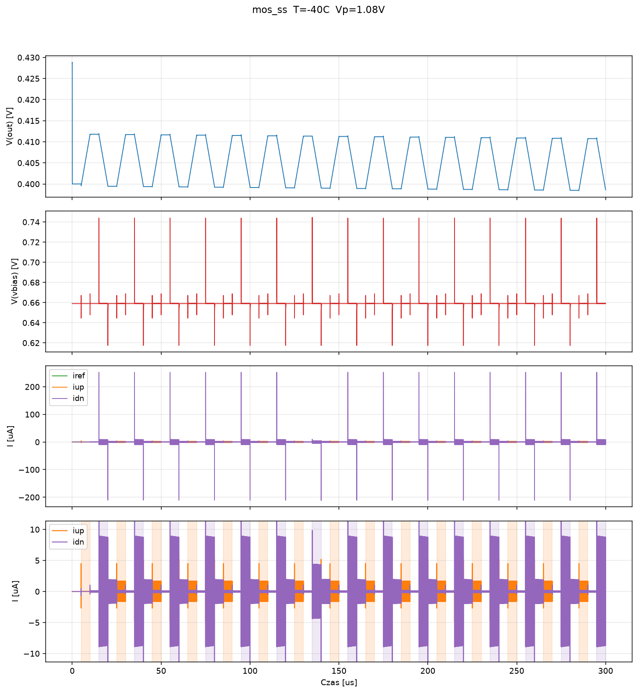
mos_ss | T=-40C | Vp=1.2V | V(out)=0.4327V, V(vbias)=0.7260V (okno 90-100us), Iref=0.447uA (okno 90-100us), Iup=0.083uA (tylko gdy Vup2=1), Idn=0.082uA (tylko gdy Vdn2=1)
mos_ss | T=-40C | Vp=1.32V | V(out)=0.4718V, V(vbias)=0.7722V (okno 90-100us), Iref=0.908uA (okno 90-100us), Iup=0.175uA (tylko gdy Vup2=1), Idn=0.172uA (tylko gdy Vdn2=1)
mos_ss | T=27C | Vp=1.08V | V(out)=0.4310V, V(vbias)=0.6094V (okno 90-100us), Iref=0.374uA (okno 90-100us), Iup=0.081uA (tylko gdy Vup2=1), Idn=0.081uA (tylko gdy Vdn2=1)
mos_ss | T=27C | Vp=1.2V | V(out)=0.4654V, V(vbias)=0.6630V (okno 90-100us), Iref=0.745uA (okno 90-100us), Iup=0.166uA (tylko gdy Vup2=1), Idn=0.165uA (tylko gdy Vdn2=1)
mos_ss | T=27C | Vp=1.32V | V(out)=0.5113V, V(vbias)=0.7056V (okno 90-100us), Iref=1.214uA (okno 90-100us), Iup=0.278uA (tylko gdy Vup2=1), Idn=0.275uA (tylko gdy Vdn2=1)
mos_ss | T=125C | Vp=1.08V | V(out)=0.4669V, V(vbias)=0.5143V (okno 90-100us), Iref=0.806uA (okno 90-100us), Iup=0.212uA (tylko gdy Vup2=1), Idn=0.212uA (tylko gdy Vdn2=1)
mos_ss | T=125C | Vp=1.2V | V(out)=0.5102V, V(vbias)=0.5606V (okno 90-100us), Iref=1.208uA (okno 90-100us), Iup=0.323uA (tylko gdy Vup2=1), Idn=0.321uA (tylko gdy Vdn2=1)
mos_ss | T=125C | Vp=1.32V | V(out)=0.5623V, V(vbias)=0.6007V (okno 90-100us), Iref=1.666uA (okno 90-100us), Iup=0.453uA (tylko gdy Vup2=1), Idn=0.450uA (tylko gdy Vdn2=1)
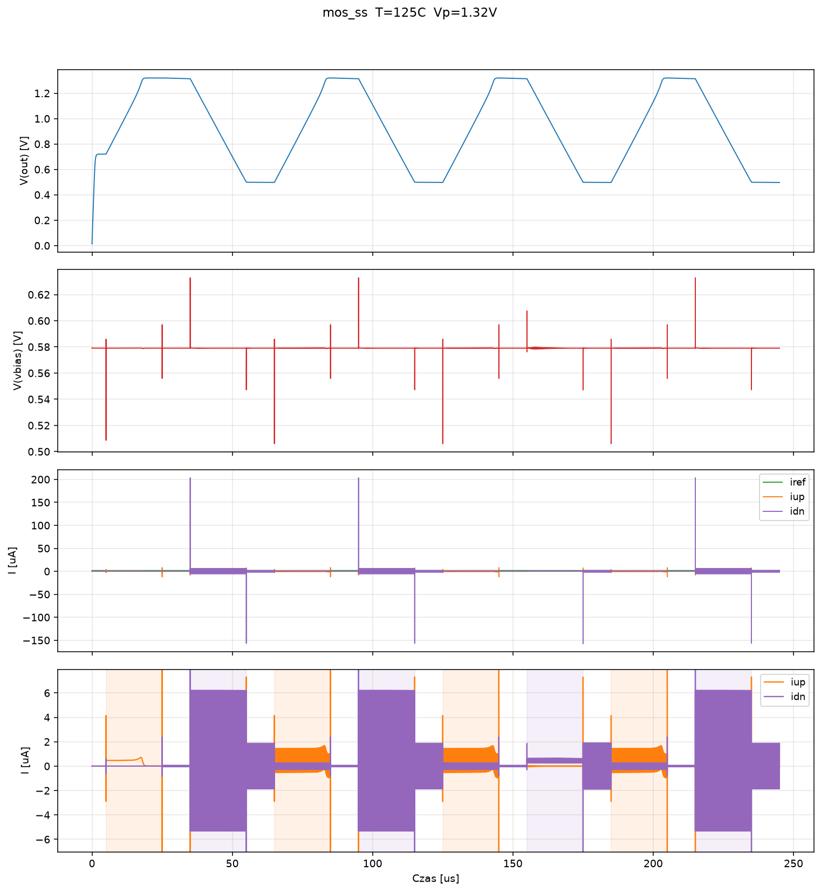
mos_ff | T=-40C | Vp=1.08V | V(out)=0.5184V, V(vbias)=0.5934V (okno 90-100us), Iref=1.245uA (okno 90-100us), Iup=0.308uA (tylko gdy Vup2=1), Idn=0.307uA (tylko gdy Vdn2=1)
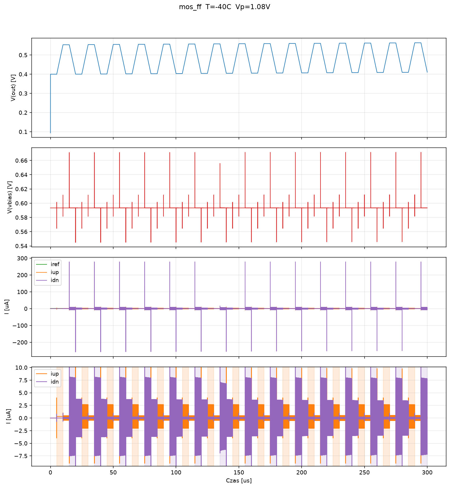
mos_ff | T=-40C | Vp=1.2V | V(out)=0.5904V, V(vbias)=0.6288V (okno 90-100us), Iref=1.936uA (okno 90-100us), Iup=0.493uA (tylko gdy Vup2=1), Idn=0.490uA (tylko gdy Vdn2=1)
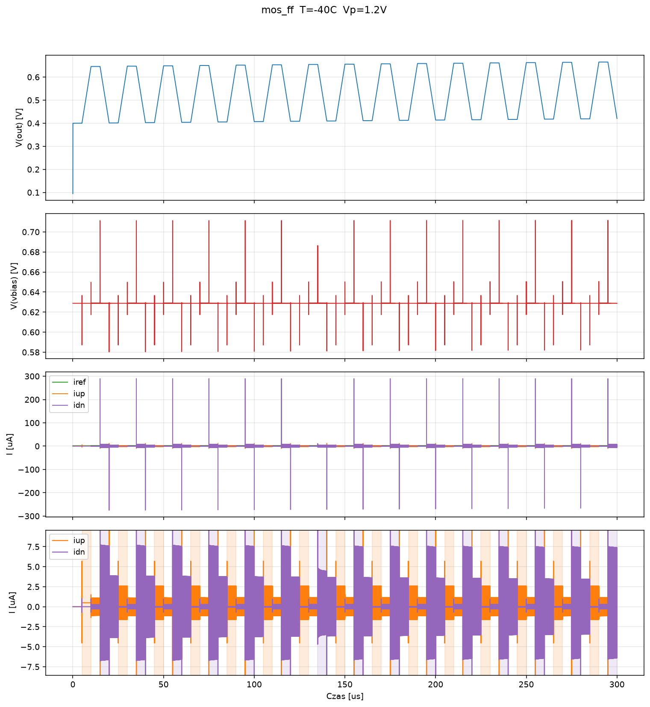
mos_ff | T=-40C | Vp=1.32V | V(out)=0.6747V, V(vbias)=0.6591V (okno 90-100us), Iref=2.717uA (okno 90-100us), Iup=0.708uA (tylko gdy Vup2=1), Idn=0.705uA (tylko gdy Vdn2=1)
mos_ff | T=27C | Vp=1.08V | V(out)=0.5522V, V(vbias)=0.5245V (okno 90-100us), Iref=1.524uA (okno 90-100us), Iup=0.420uA (tylko gdy Vup2=1), Idn=0.420uA (tylko gdy Vdn2=1)
mos_ff | T=27C | Vp=1.2V | V(out)=0.6258V, V(vbias)=0.5609V (okno 90-100us), Iref=2.180uA (okno 90-100us), Iup=0.612uA (tylko gdy Vup2=1), Idn=0.612uA (tylko gdy Vdn2=1)
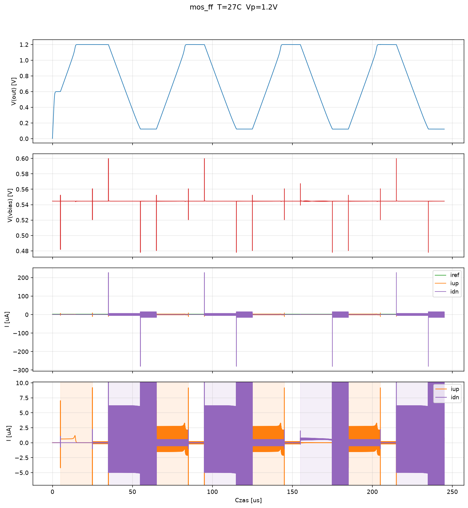
mos_ff | T=27C | Vp=1.32V | V(out)=0.7115V, V(vbias)=0.5928V (okno 90-100us), Iref=2.905uA (okno 90-100us), Iup=0.830uA (tylko gdy Vup2=1), Idn=0.828uA (tylko gdy Vdn2=1)
mos_ff | T=125C | Vp=1.08V | V(out)=0.4731V, V(vbias)=0.4205V (okno 90-100us), Iref=1.997uA (okno 90-100us), Iup=0.636uA (tylko gdy Vup2=1), Idn=0.614uA (tylko gdy Vdn2=1)
mos_ff | T=125C | Vp=1.2V | V(out)=0.5504V, V(vbias)=0.4575V (okno 90-100us), Iref=2.601uA (okno 90-100us), Iup=0.835uA (tylko gdy Vup2=1), Idn=0.805uA (tylko gdy Vdn2=1)
mos_ff | T=125C | Vp=1.32V | V(out)=0.6388V, V(vbias)=0.4907V (okno 90-100us), Iref=3.247uA (okno 90-100us), Iup=1.054uA (tylko gdy Vup2=1), Idn=1.015uA (tylko gdy Vdn2=1)
mos_sf | T=-40C | Vp=1.08V | V(out)=0.4395V, V(vbias)=0.6820V (okno 90-100us), Iref=0.515uA (okno 90-100us), Iup=0.102uA (tylko gdy Vup2=1), Idn=0.102uA (tylko gdy Vdn2=1)
mos_sf | T=-40C | Vp=1.2V | V(out)=0.4828V, V(vbias)=0.7272V (okno 90-100us), Iref=1.009uA (okno 90-100us), Iup=0.208uA (tylko gdy Vup2=1), Idn=0.206uA (tylko gdy Vdn2=1)
mos_sf | T=-40C | Vp=1.32V | V(out)=0.5391V, V(vbias)=0.7633V (okno 90-100us), Iref=1.614uA (okno 90-100us), Iup=0.345uA (tylko gdy Vup2=1), Idn=0.341uA (tylko gdy Vdn2=1)
mos_sf | T=27C | Vp=1.08V | V(out)=0.4727V, V(vbias)=0.6172V (okno 90-100us), Iref=0.812uA (okno 90-100us), Iup=0.190uA (tylko gdy Vup2=1), Idn=0.189uA (tylko gdy Vdn2=1)
mos_sf | T=27C | Vp=1.2V | V(out)=0.5227V, V(vbias)=0.6601V (okno 90-100us), Iref=1.313uA (okno 90-100us), Iup=0.316uA (tylko gdy Vup2=1), Idn=0.314uA (tylko gdy Vdn2=1)
mos_sf | T=27C | Vp=1.32V | V(out)=0.5832V, V(vbias)=0.6964V (okno 90-100us), Iref=1.895uA (okno 90-100us), Iup=0.467uA (tylko gdy Vup2=1), Idn=0.464uA (tylko gdy Vdn2=1)
mos_sf | T=125C | Vp=1.08V | V(out)=0.5118V, V(vbias)=0.5152V (okno 90-100us), Iref=1.291uA (okno 90-100us), Iup=0.359uA (tylko gdy Vup2=1), Idn=0.357uA (tylko gdy Vdn2=1)
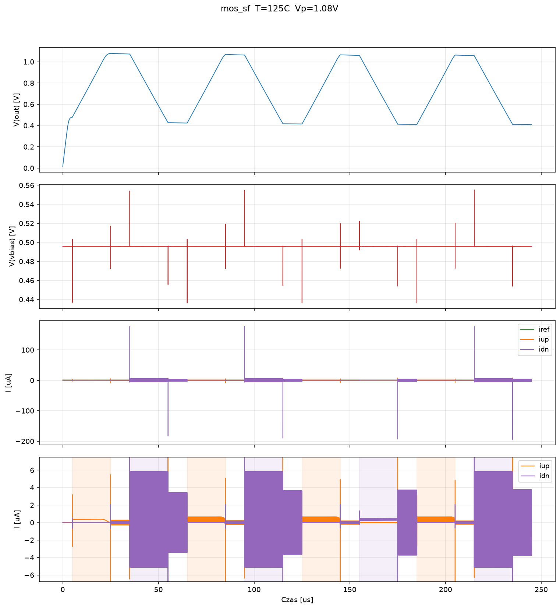
mos_sf | T=125C | Vp=1.2V | V(out)=0.5706V, V(vbias)=0.5561V (okno 90-100us), Iref=1.782uA (okno 90-100us), Iup=0.504uA (tylko gdy Vup2=1), Idn=0.500uA (tylko gdy Vdn2=1)
mos_sf | T=125C | Vp=1.32V | V(out)=0.6404V, V(vbias)=0.5924V (okno 90-100us), Iref=2.321uA (okno 90-100us), Iup=0.668uA (tylko gdy Vup2=1), Idn=0.660uA (tylko gdy Vdn2=1)
mos_fs | T=-40C | Vp=1.08V | V(out)=0.4533V, V(vbias)=0.5934V (okno 90-100us), Iref=0.606uA (okno 90-100us), Iup=0.138uA (tylko gdy Vup2=1), Idn=0.137uA (tylko gdy Vdn2=1)
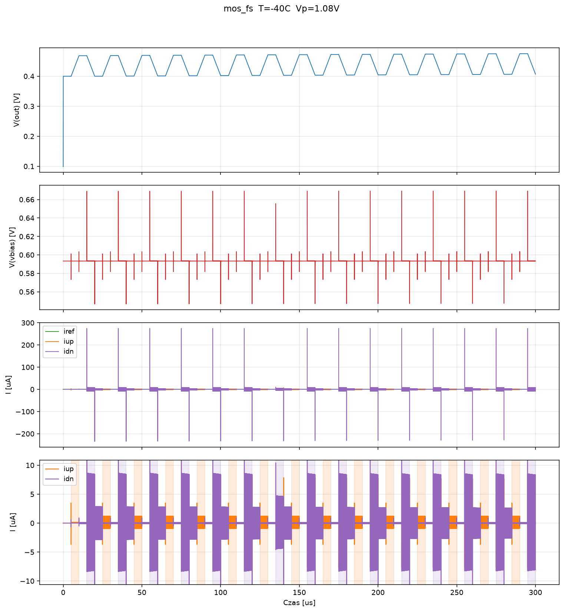
mos_fs | T=-40C | Vp=1.2V | V(out)=0.5048V, V(vbias)=0.6369V (okno 90-100us), Iref=1.136uA (okno 90-100us), Iup=0.266uA (tylko gdy Vup2=1), Idn=0.264uA (tylko gdy Vdn2=1)
mos_fs | T=-40C | Vp=1.32V | V(out)=0.5701V, V(vbias)=0.6721V (okno 90-100us), Iref=1.780uA (okno 90-100us), Iup=0.429uA (tylko gdy Vup2=1), Idn=0.425uA (tylko gdy Vdn2=1)
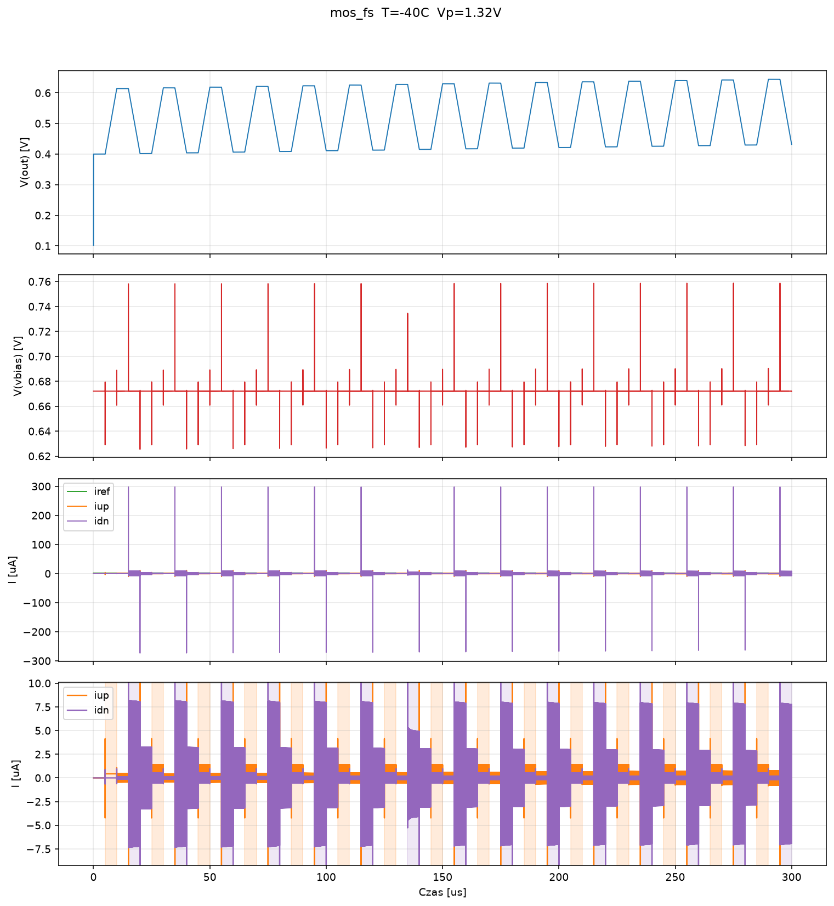
mos_fs | T=27C | Vp=1.08V | V(out)=0.4851V, V(vbias)=0.5255V (okno 90-100us), Iref=0.886uA (okno 90-100us), Iup=0.230uA (tylko gdy Vup2=1), Idn=0.229uA (tylko gdy Vdn2=1)
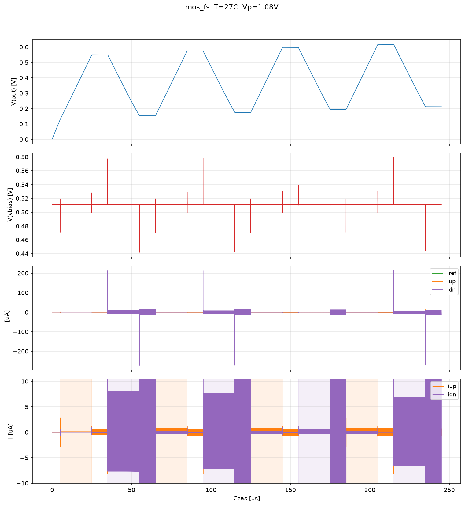
mos_fs | T=27C | Vp=1.2V | V(out)=0.5413V, V(vbias)=0.5677V (okno 90-100us), Iref=1.414uA (okno 90-100us), Iup=0.374uA (tylko gdy Vup2=1), Idn=0.373uA (tylko gdy Vdn2=1)
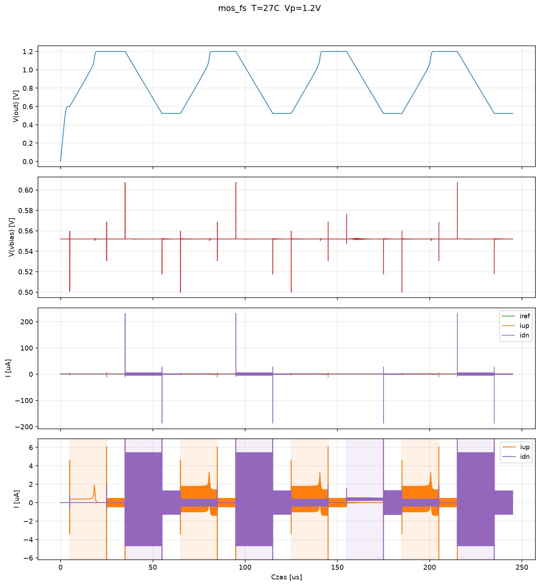
mos_fs | T=27C | Vp=1.32V | V(out)=0.6085V, V(vbias)=0.6036V (okno 90-100us), Iref=2.025uA (okno 90-100us), Iup=0.546uA (tylko gdy Vup2=1), Idn=0.544uA (tylko gdy Vdn2=1)
mos_fs | T=125C | Vp=1.08V | V(out)=0.4536V, V(vbias)=0.4208V (okno 90-100us), Iref=1.351uA (okno 90-100us), Iup=0.407uA (tylko gdy Vup2=1), Idn=0.401uA (tylko gdy Vdn2=1)
mos_fs | T=125C | Vp=1.2V | V(out)=0.5126V, V(vbias)=0.4616V (okno 90-100us), Iref=1.861uA (okno 90-100us), Iup=0.565uA (tylko gdy Vup2=1), Idn=0.556uA (tylko gdy Vdn2=1)
mos_fs | T=125C | Vp=1.32V | V(out)=0.5829V, V(vbias)=0.4979V (okno 90-100us), Iref=2.421uA (okno 90-100us), Iup=0.744uA (tylko gdy Vup2=1), Idn=0.730uA (tylko gdy Vdn2=1)